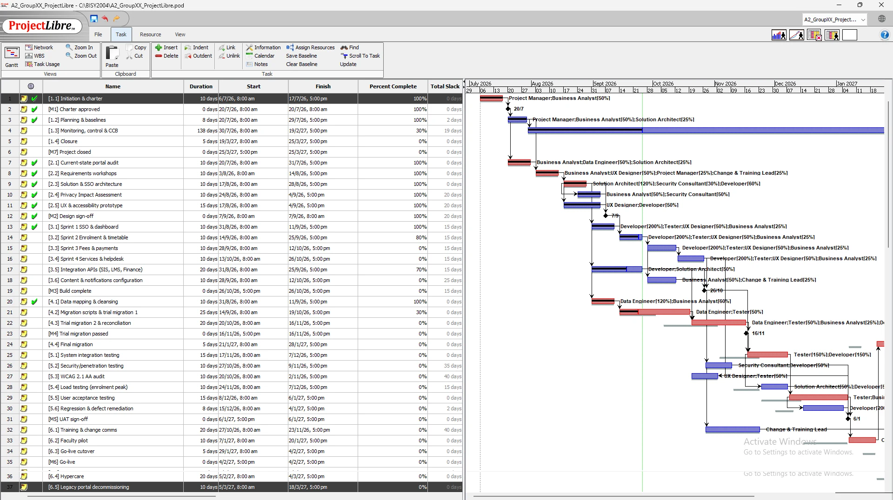
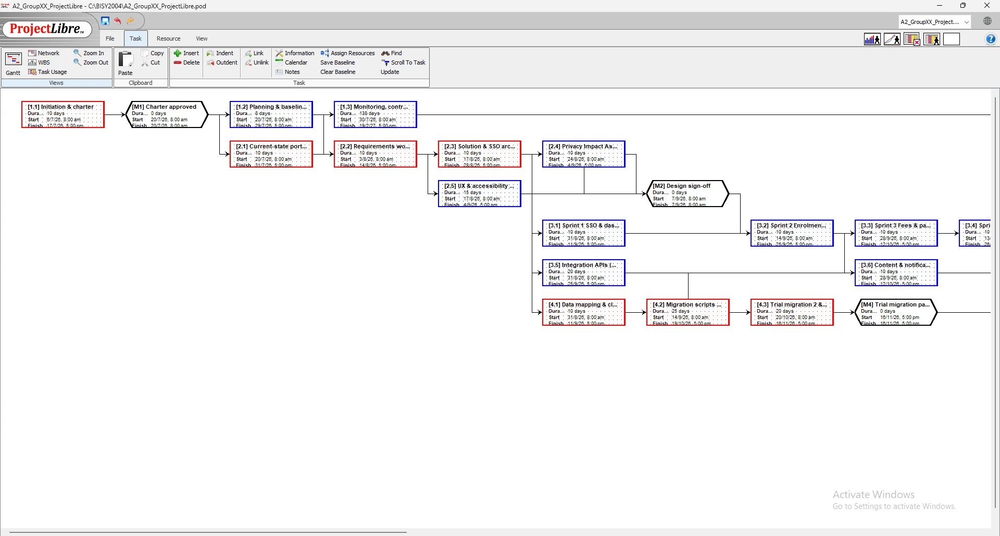
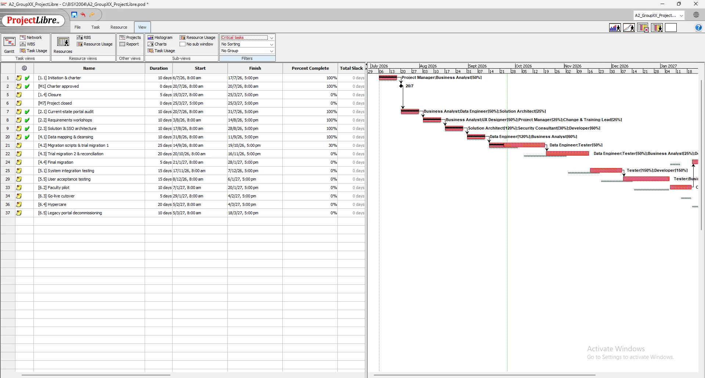
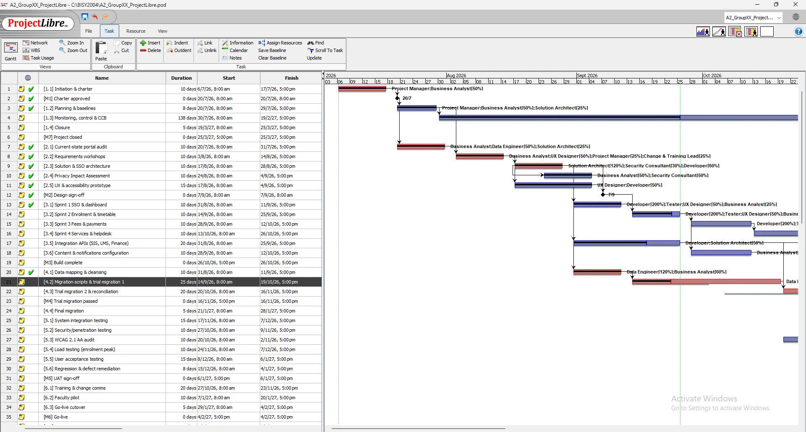
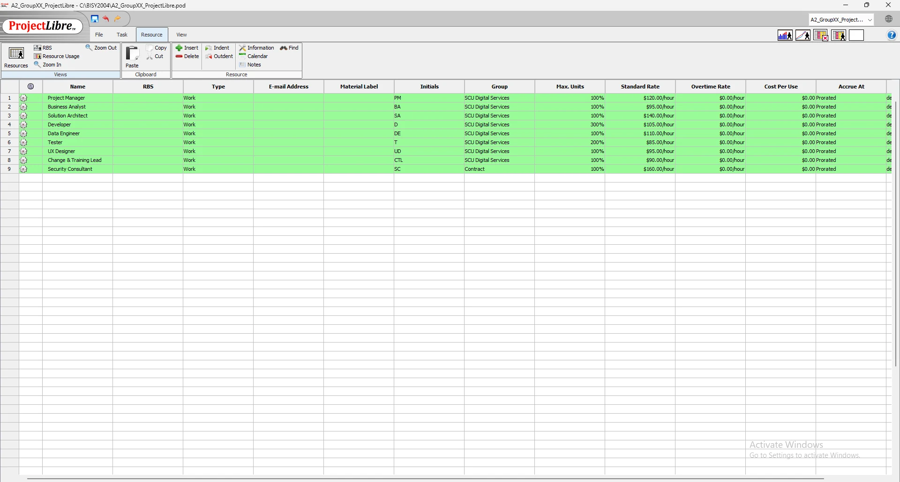
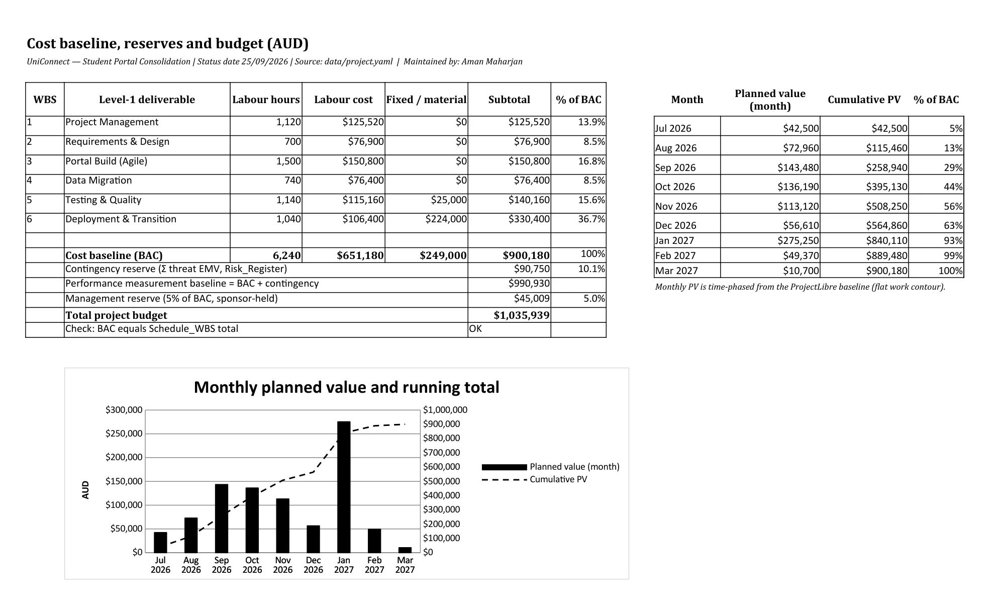
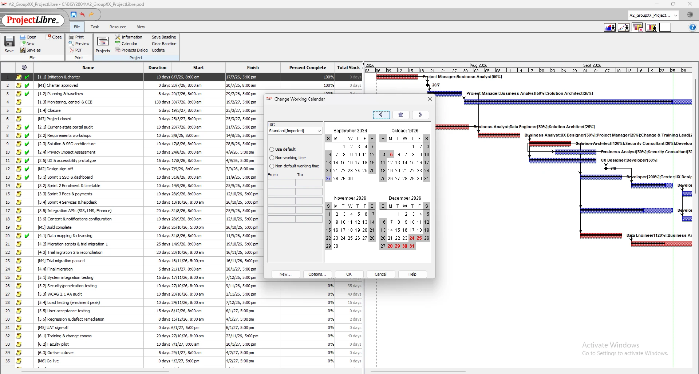
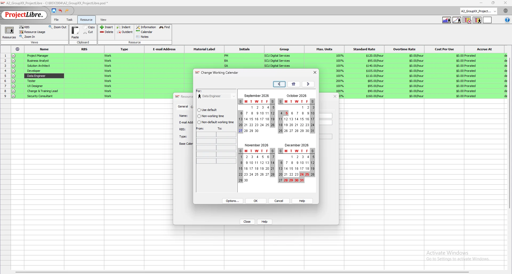
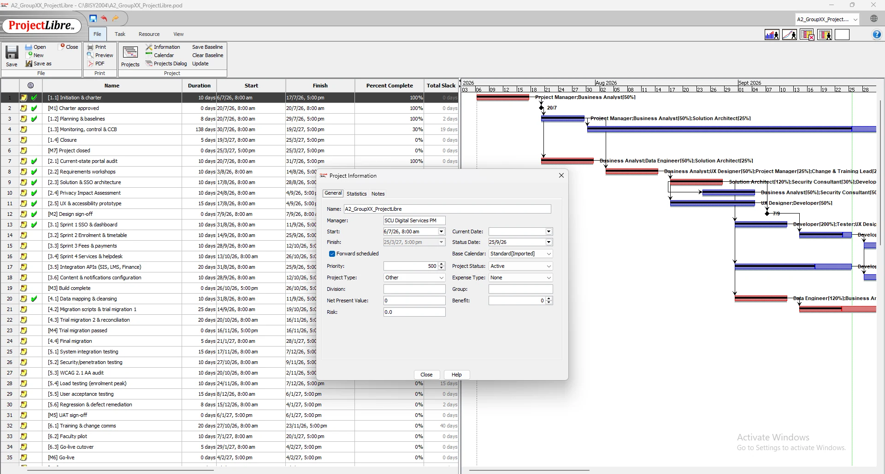

Schedule, critical path and cost
Our baseline schedule and budget, where the critical path runs, and what the slip we found on 25 September means for go-live.
ProjectLibre schedule





Milestones
| ID | Milestone | Baseline | Forecast (25 Sep) | Status |
|---|---|---|---|---|
| M1 | Charter approved | 17 Jul 2026 | 17 Jul 2026 | Achieved |
| M2 | Design sign-off | 4 Sep 2026 | 4 Sep 2026 | Achieved |
| M3 | Build complete | 26 Oct 2026 | 26 Oct 2026 | On track |
| M4 | Trial migration passed | 2 Nov 2026 | 16 Nov 2026 | At risk |
| M5 | UAT sign-off | 14 Dec 2026 | 6 Jan 2027 | At risk |
| M6 | Go-live | 20 Jan 2027 | 4 Feb 2027 | At risk |
| M7 | Project closed | 11 Mar 2027 | 25 Mar 2027 | At risk |
Critical path
The baseline critical path goes through 1.1, 2.1, 2.2, 2.3, 4.1, 4.2, 4.3, 5.1, 5.5, 6.2, 4.4, 6.3, 6.4, 6.5, 1.4 (170 working days, finishing 11 Mar 2027). It goes through data migration and testing. The Agile build has 5 days of float and training has 30, so they can soak up delays, but migration can't. We also did our own forward/backward pass in Python and got the same dates and float as ProjectLibre (Kerzner, 2022).
| WBS | Task | Duration | Early start | Early finish | Total float | Free float |
|---|---|---|---|---|---|---|
| 1.2 | Planning & baselines | 8d | 20 Jul 2026 | 29 Jul 2026 | 2d | 0d |
| 1.3 | Monitoring, control & CCB | 138d | 30 Jul 2026 | 19 Feb 2027 | 9d | 9d |
| 2.4 | Privacy Impact Assessment | 10d | 24 Aug 2026 | 4 Sep 2026 | 10d | 0d |
| 2.5 | UX & accessibility prototype | 15d | 17 Aug 2026 | 4 Sep 2026 | 10d | 0d |
| 3.1 | Sprint 1 SSO & dashboard | 10d | 31 Aug 2026 | 11 Sep 2026 | 5d | 0d |
| 3.2 | Sprint 2 Enrolment & timetable | 10d | 14 Sep 2026 | 25 Sep 2026 | 5d | 0d |
| 3.3 | Sprint 3 Fees & payments | 10d | 28 Sep 2026 | 12 Oct 2026 | 5d | 0d |
| 3.4 | Sprint 4 Services & helpdesk | 10d | 13 Oct 2026 | 26 Oct 2026 | 5d | 0d |
| 3.5 | Integration APIs (SIS, LMS, Finance) | 20d | 31 Aug 2026 | 25 Sep 2026 | 5d | 5d |
| 3.6 | Content & notifications configuration | 10d | 28 Sep 2026 | 12 Oct 2026 | 15d | 10d |
| 5.2 | Security/penetration testing | 10d | 27 Oct 2026 | 9 Nov 2026 | 25d | 25d |
| 5.3 | WCAG 2.1 AA audit | 10d | 20 Oct 2026 | 2 Nov 2026 | 30d | 30d |
| 5.4 | Load testing (enrolment peak) | 10d | 10 Nov 2026 | 23 Nov 2026 | 15d | 15d |
| 5.6 | Regression & defect remediation | 8d | 1 Dec 2026 | 10 Dec 2026 | 2d | 2d |
| 6.1 | Training & change comms | 20d | 27 Oct 2026 | 23 Nov 2026 | 30d | 30d |
| Scenario | Float | Effect on project finish |
|---|---|---|
| [4.2] Migration scripts & trial migration 1 +5 days | 0d | finish moves 5 working days to 18 Mar 2027 |
| [5.1] System integration testing +5 days | 0d | finish moves 5 working days to 18 Mar 2027 |
| [6.3] Go-live cutover +5 days | 0d | finish moves 5 working days to 18 Mar 2027 |
| [6.1] Training & change comms +5 days | 30d | absorbed, 25d float left |


Baseline vs actual at 25 Sep 2026


Trial migration 1 (4.2) found 4.7% duplicate records, so we re-estimated it from 15 to 25 days. 4.2 has zero float, so the forecast go-live moved from 20 Jan 2027 to 4 Feb 2027, just one working day before the hard deadline. Architecture (2.3) and mapping (4.1) finished on time but took 20% more effort.
Resources and cost



| WBS | Deliverable | Hours | Labour | Fixed | Total |
|---|---|---|---|---|---|
| 1 | Project Management | 1,120 | $125,520 | $0 | $125,520 |
| 2 | Requirements & Design | 700 | $76,900 | $0 | $76,900 |
| 3 | Portal Build (Agile) | 1,500 | $150,800 | $0 | $150,800 |
| 4 | Data Migration | 740 | $76,400 | $0 | $76,400 |
| 5 | Testing & Quality | 1,140 | $115,160 | $25,000 | $140,160 |
| 6 | Deployment & Transition | 1,040 | $106,400 | $224,000 | $330,400 |
| Cost baseline (BAC) | $900,180 | ||||
| Contingency reserve (Σ risk EMV, 10.1% of BAC) | $90,750 | ||||
| Management reserve (5% of BAC, sponsor-held) | $45,009 | ||||
| Total budget | $1,035,939 |









Interpretation
Labour is $651,180 and fixed costs (licences, hosting, pen-test, training) are $249,000. The contingency reserve is the total EMV of our threats, so every dollar is tied to a named risk. The management reserve is for things we can't predict, and only the sponsor can release it. Spending peaks in January 2027 when the licences kick in at cutover.
Links to other pages
- Risk: EMV sets the contingency reserve
- Monitoring: EVM checks progress against this baseline
- Trello: cards have the same dates and float
What we decided
Protect the critical path. We crash 4.2/4.3 with a contractor (CR-02) instead of cutting testing, because every critical day we lose now eats our last day of buffer.